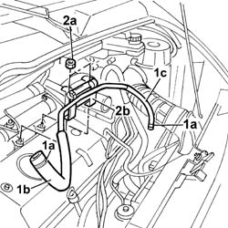

1088D67 COOLANT PIPE BETWEEN COOLANT RESERVOIR AND THERMOSTAT - R.R.
- Path
- Procedures > 10 ENGINE UNIT > 1088 ENGINE COOLING > 1088D COOLANT HOSES AND SLEEVES > 1088D67 COOLANT PIPE BETWEEN COOLANT RESERVOIR AND THERMOSTAT - R.R.
- Kind
- repair procedure (removal / refitting; the operation number is the code)
- Applies to
- engines: 2.8 JTD 8V; all production periods
- Interactive page
- https://sloeber94.github.io/elrnDB-fDct/en/#/244000961
Applies to: engines: 2.8 JTD 8V; all production periods
 Removing
Removing
 Refitting
Refitting- Position a suitable container for collecting the engine coolant.
1. Open the retaining bands (1a) and release the pipe (1b) from the coolant reservoir and the pipe (1c) from the thermostat.
2. Undo the fixing nuts (2a) and remove the pipe (2b) complete with mounting bracket.

Applies to: engines: 2.8 JTD 8V; all production periods
Refitting
Removing- Place the pipe, complete with mounting bracket, in position.
- Tighten the retaining nuts.
- Connect the pipes to the thermostat and to the coolant reservoir and renew the retaining bands.
Topics linked from this page (2)
Topics that link to this page (4)
- 1072B11 INTAKE MANIFOLD - R R AND REPLACE GASKET FOR VERSIONS WITH AIR CONDITIONER
- 1080C50 PIPE CARRYING EXHAUST GAS TO E.G.R. VALVE - R + R
- 1080C80 EXHAUST GAS WATER HEAT EXCHANGER FOR EGR VALVE R R
- 3330D12 BRAKE SERVO - R R FOR RIGHT HAND DRIVE VERSIONS - INCLUDES SEPARATION FROM MASTER CYLINDER(PUMP)